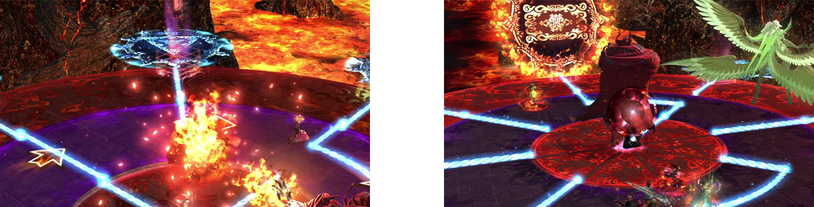
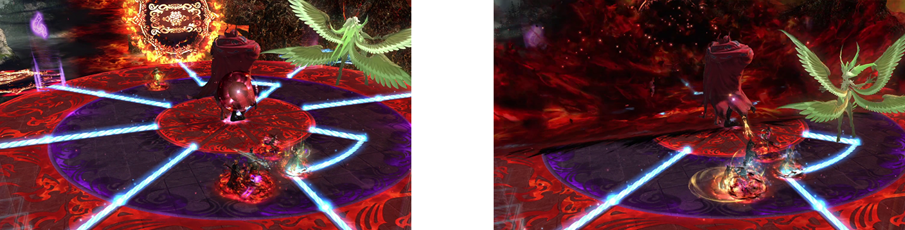
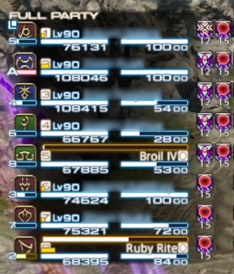
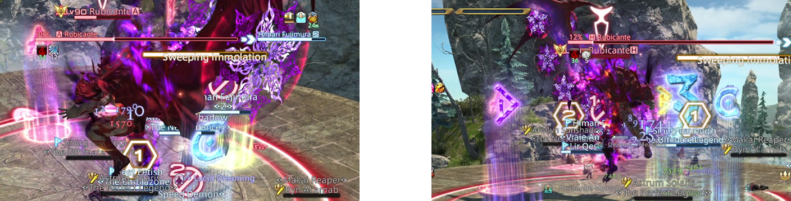
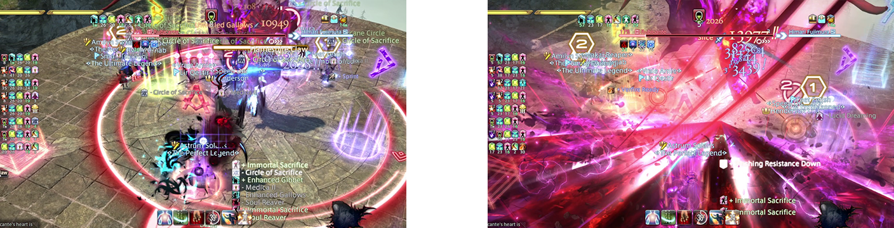

Mount Ordeals (Extreme) is a high-end duty added in patch 6.3: Gods Revel, Lands Tremble. The fight can be unlocked by speaking to The Wandering Minstrel in Old Sharlayan (12.7, 14.3) after completing Mount Ordeals.
The minimum ilvl required to enter this fight is 610.
Rubicante always casts Ordeal of Purgation twice at a time. Like in the Normal difficulty, he sends out either 1 or 2 fireballs from the center that follow a path and ignite the sigil at the end of the path. Ordeal of Purgation will either send out 2 fireballs and only spin the middle circle, or it will send out 1 fireball and spin the innermost and outermost circles.
In Extreme, an orange rectangle has been added alongside the Normal difficulty's blue triangle. When the orange rectangle is detonated, it will blow up the half of the field that it is on. When a blue triangle is detonated, it does a conal cleave originating from the sigil.
 Here is an example pattern of Ordeal of Purgation, which sends out 1 fireball and has 2 spinning circles.
Circle AOEs will rotate the field, with safe spots directly across from each other. Party 1 should take the North safe spot, and Party 2 should take the South safe spot.
Rubicante will cast 1 of these 3 attacks. Spike of Flame is 8 spread AOEs targeting each player. Twinfold Flame is a set of 4 enumeration stacks that require 2 people inside of each stack. Fourfold Flame is a light party stack.
A line AOE that cleaves in front and behind of Rubicante.
Rubicante will cast another 1 of these 3 attacks, but not the same attack used previously.
After the spinning circle AOEs from Arch Inferno finish, cleaves that target each player will go out. Spread to clock spots in order to not overlap conal cleaves.
Rubicante will begin charging Rubicante's Power. 6 adds will spawn.
The center add will apply a DoT every few seconds, stacking the effect the longer the add is alive.
The north add will scatter random AOEs on the field.
The 2 northwest and northeast adds will tether to random players and do heavy-hitting attacks. Tanks should grab tethers and take the attack.
The 2 southwest and southeast adds will tether to random players do conal cleaves. Tethered players should point the cleave out towards the edge of the field to avoid hitting other players.
Rubicante will unleash a powerful attack that increases in strength the higher the Rubicante's Power gauge is. A gauge of 100 will result in a wipe.
Rubicante will gain a purple fire effect, which will allow him to do difficult mechanics and change other ones.
Rubicante will apply debuffs to the party. Everyone will receive a long spread debuff. Other debuffs are role-based. The role with only the long spread debuff or the long spread debuff + a stack marker should stack up then spread out. The role with the long spread debuff + a triangle debuff should spread and stay spread away from others. In the below image, the DPS have to stack then spread, and the supports have to spread and stay spread out.
Rubicante will spin a cross, which will end up pointing to all cardinals or to all intercardinals. He will then do a large X-shaped cleave that spreads out. The stacking role from Flamespire Brand should dodge into the center to stack, while the spreading role should stay out of the center to give the stacking role space.
Here is a video example of the stacking role, which goes to the center and then spreads to clock spots.
Here is a video example of the spreading role, which stays out and dodges between line AOEs, then spreads to clock spots.
While in his purple fire mode, Inferno will do a 8 large spread AOEs targeting every player. Ensure you are spread out to not die.
Rubicante will do either Scalding Ring or Scalding Signal, which are a donut AOE or a circle AOE respectively. Either be inside his hitbox or outside of it to avoid the AOE. Immediately after the donut / circle, he will do line AOEs that target every player, so be sure to be in clock spots. As in Normal, the line AOE will shoot back through the arena in the same angle it shot out at, like the line AOEs in Crown of the Immaculate. Angling the line AOEs out to clock spots ensures consistency and a predictable way to dodge the returning line AOEs later.
Rubicante will face a direction and do a half-room cleave in the direction he is facing. Be in the half of the room behind him to avoid the half-room cleave. He will also raise his cape to telegraph either a light party stack centered on healers, or a spread attack that hits everyone. One large star on each side denotes light party stacks. Four small stars on each side denote spread AOEs.
Rubicante does two simultaneous double tankbusters with 90 degree cleaves. Make sure the tanks are properly spread away from each other. After Dualfire, Rubicante extinguishes his purple fire mode. This means that Inferno attacks will go back to being raidwides instead of spreads.
After several repeated mechanics, Rubicante will do Flamespire Claw, his last unique mechanic. Limit Cut dots will appear over everyone's heads, which denote the order in which he does large cleaves on players. There are multiple ways to resolve this, but I prefer having odd-numbered players stack in the West safe spot and even-numbered players stack in the East safe spot. Odds will resolve their cleave North, and Evens will resolve their cleave South. At the same time, tethers will attach to random players. These tethers will gradually give the tethered player a stack of Flamespire. Accumulating 5 stacks of Flamespire will result in a wipe. Players need to trade off the tether to avoid any one player accumulating too many Flamespire debuffs while resolving Limit Cut cleaves.
After this, Rubicante will loop mechanics and do another Scalding Ring / Scalding Signal, a Sweeping Immolation, and two more Ordeal of Purgations, then enrage. If your DPS is good and you didn't have too many deaths, you can defeat Rubicante around Flamespire Claw. Best of luck!